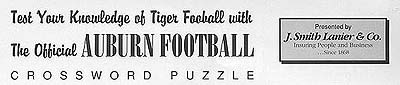

|

|

|
| |
Note: Please print this page to work crossword puzzle. |
| |
Across
1 Florida's head coach is _____ Spurrier
5 The only team that's played more games against Florida than Auburn
6 Number of times Auburn has shutout Florida
7 On the last play of the 1989 Auburn-Florida game, quarterback
Reggie Slack connected with this receiver for a game-winning
touchdown, Shayne ______
10 Florida defeated this school in last year's Orange Bowl
11 Follows Split, Tight, or Defensive
12 Cornerback Rodney Crayton wears this number
15 Auburn has appeared on this network 22 times
17 "War Eagle, fearless and ____"
18 Steve Spurrier's favorite sideline headgear
20 When teams play at Florida, they go to the _____
21 Sophomore Heath Evans' position (abbreviation)
23 Florida's home field is ______________ Stadium
|
Down
1 This Tiger receiver caught the winning touchdown pass in the
1994 Auburn-Florida game (last name)
2 Auburn's running backs coach is Eddie ____
3 In 1993 this Tiger defensive back returned an interception 96 yards
for a touchdown to help Auburn defeat Florida 38-35, Calvin _______
4 This former Tiger punter booted a career-long 71-yard punt against
Florida in 1993, Terry ______
5 Florida's nickname is the ______
8 The University of Florida is located in ___________, Florida
9 Jordan-Hare's public address announcer is Carl ________
13 This former Gator, now with the New Orleans Saints, won the Heisman Trophy
in 1996 (last name)
14 The University of Florida's president is Dr. John ________
15 Auburn's women's basketball coach (last name)
16 This former Auburn quarterback's best game was against Florida in 1970 (last name)
17 "_____ 'em Tigers, just like beagles"
19 In the 1987 Auburn-Florida game, Auburn's defense held this Florida running back,
the nation's leading rusher, to less than half his average (last name)
22 Abbreviation for field goal
|
SOLUTIONS
TABLE OF CONTENTS | PROGRAM
INDEX | HOME
© 1999 Auburn Network, Inc.
|